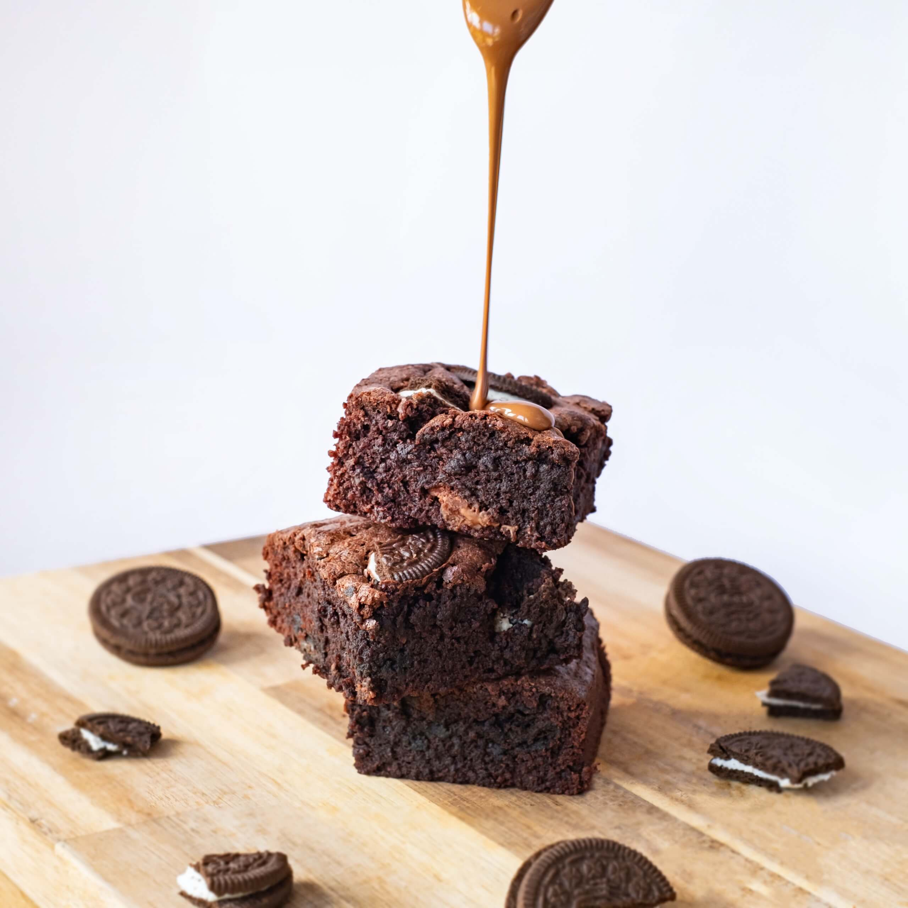

TLittleuns is a small new bakery in Hertfordshire specialising in sweet treats. Due to the size and nature of the business it was vital that the owners personality and taste shone through in everything from the brand name to the packaging their postal brownies would arrive in.
Littleuns logo design progression
The first task in starting a new business was to give it a name. The previous title of Tara’s Bakery didn’t really set the brand appart and therefore we got to work thinking of a new name for the brand. The name Littleuns was derrived from a family nickname of the owner of the bakery and as soon as I had said it everyone involved was hooked on the name. It’s short, snappy and was available as a domain name so we immediately snapped up littleunscakes.com
What’s a does a good bakery have without delish looking photos of their food? Tara had no pre-existing imagery of her baking that felt up to the task plus her postal brownies were going to be a new product in her range so we baked up a couple of fresh batches and set up a simple shoot to capture them (the bonus being we get to eat them all after too).
We had to design and build a website capable of fulfilling all of Littleuns needs. From taking online orders for local delivery to postal orders across the country. To do this we built a custom site and integrated it with Stripe Checkout to facilitate the handling of the transactions and to build a client database from which Tara is able reference her online orders.
Keeping your customers informed, especially with allergen information is a huge part to any food business. To help Littleuns establish best practice around this we created some small cards to be inserted into the box with all products that would include detail on any potential allergens with a space to include either the product name or a message on the front-side of the card.